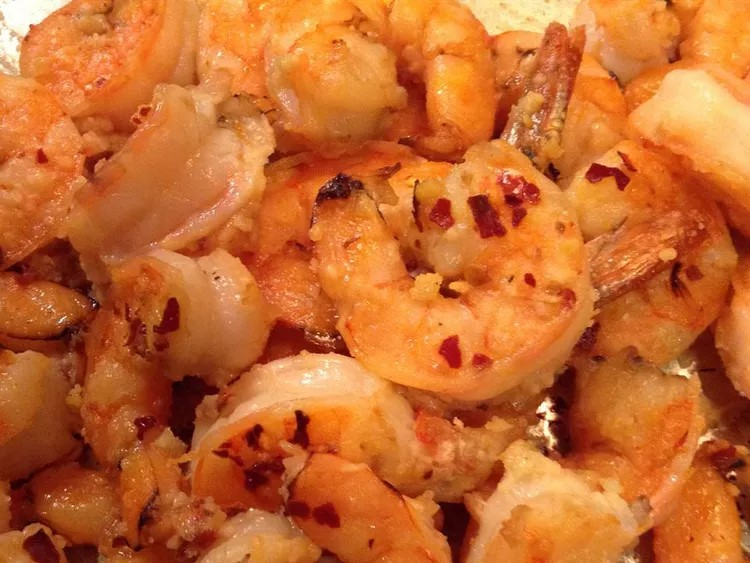

Garlicy lemon tiger prawn starter

Description
Begin your low carb feast with this delicious starter!
Light enough to leave space for main and yummy enough to make you want more
A great way to start your low carb special!
Ingredients
- 1 ½ pounds tiger prawns, peeled and deveined
- 1 cup butter
- 1 teaspoon minced garlic
- 1 ½ tablespoons lemon juice
- 3 tablespoons grated Parmesan cheese
Method
- Preheat oven on broiler setting. With a sharp knife, remove tails from prawns, and butterfly them from the underside. Arrange prawns on broiler pan.
- In a small saucepan, melt butter with garlic and lemon juice. Pour 1/4 cup butter mixture in a small bowl, and brush onto prawns. Sprinkle Parmesan cheese over shrimp.
- Place broiler pan on top rack, and broil prawns for 4 to 5 minutes, or until done. Serve with remaining butter mixture for dipping